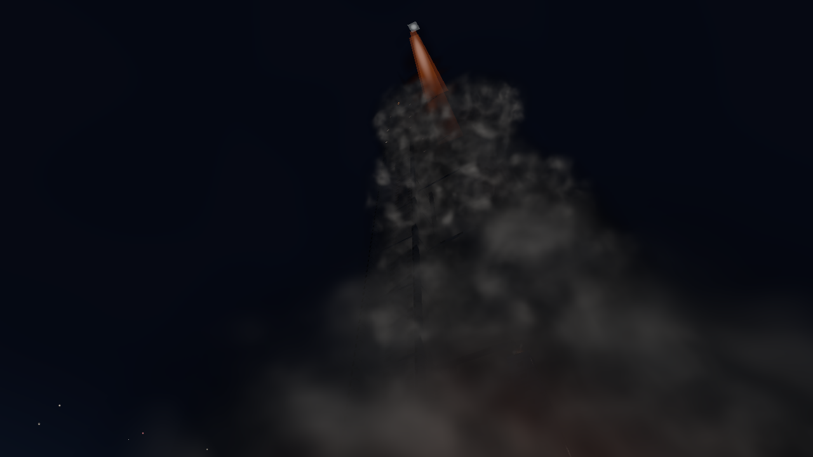
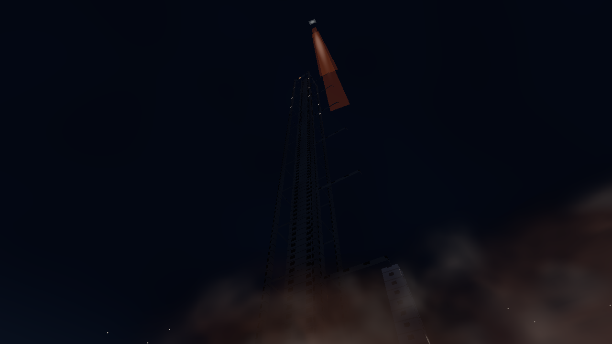
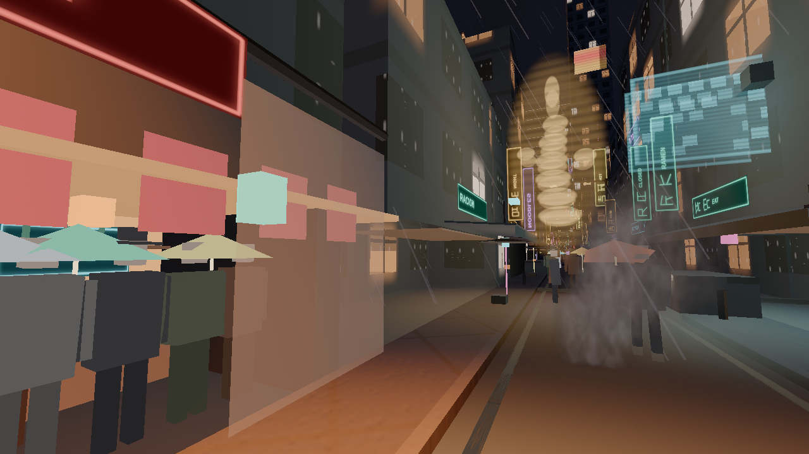
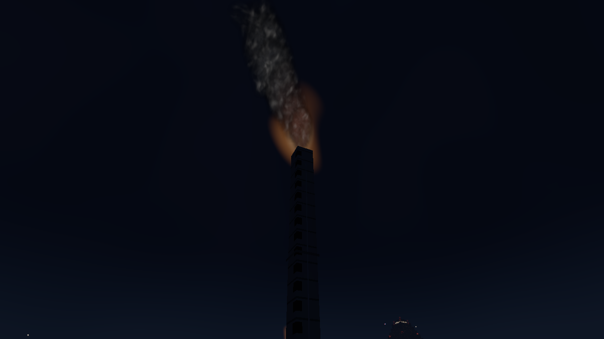
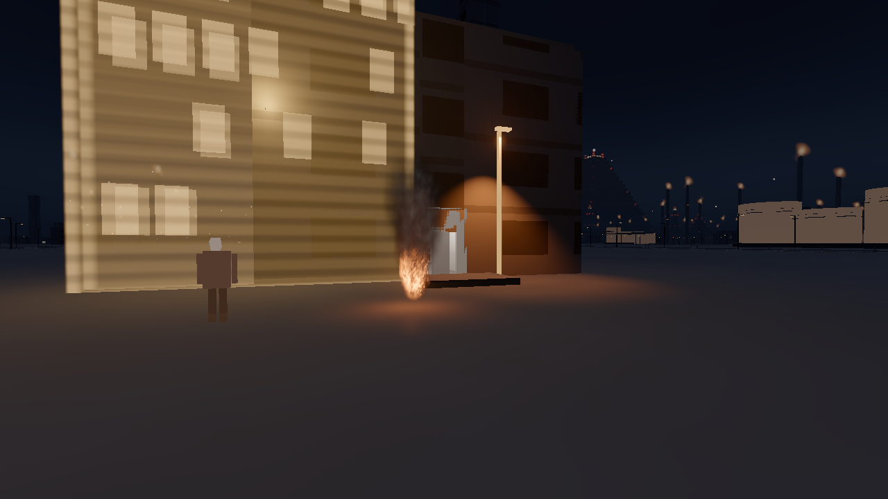
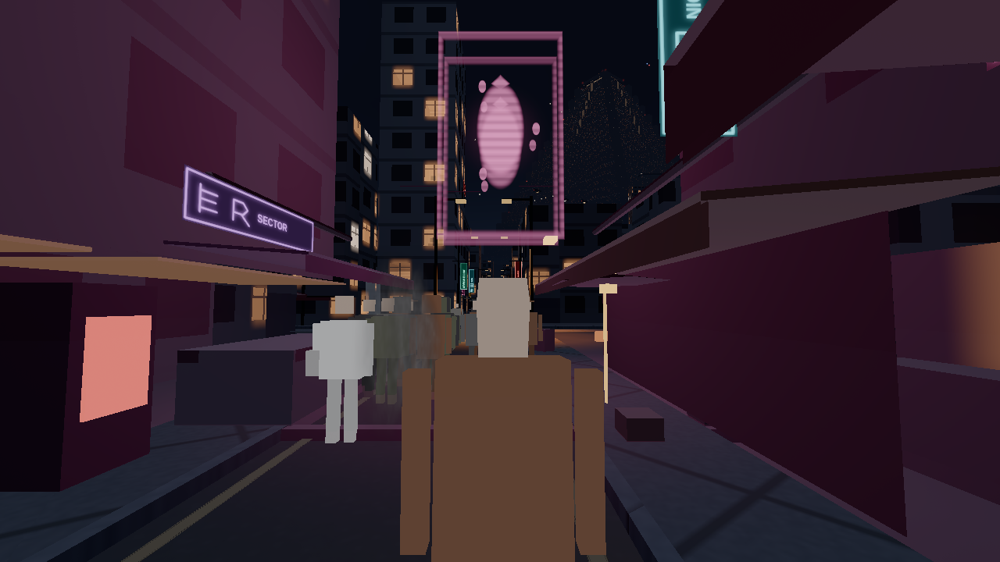
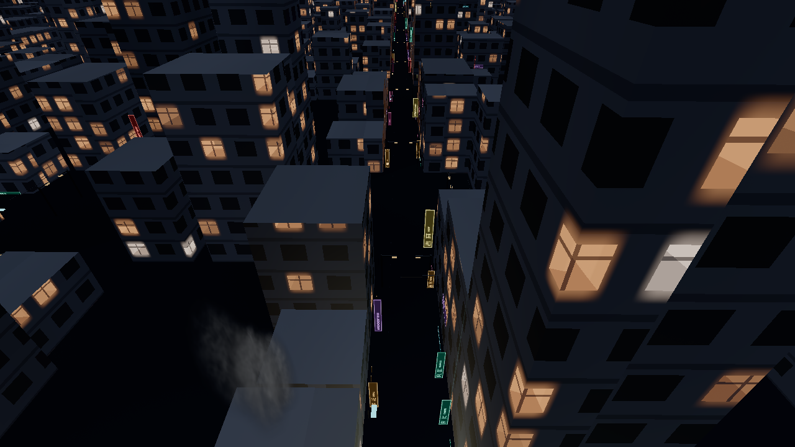
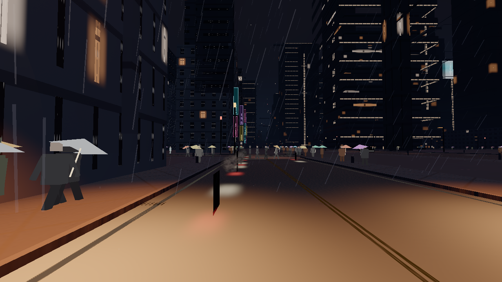

Smoke and steam, K1
Wind-driven smoke and steam for the night city: the LAX launch plume, barrel fires, refinery stacks, street vents, manholes, rooftop vents, food-stall steam, and vehicle exhaust. A person is 1.80 m. A vent is a few metres. The launch cloud is hundreds of metres.
Graphics tier is how the plume is drawn. The memory budget is how much stays resident. Ultra stays selectable on a phone and does not allocate the ultra particle buffer on a low device. Rules: MEMORY-RULES.html.
What is in the picture
- One camera-facing billboard field in
src/fx/smoke. Eight kinds share it: vent, manhole, roof, stall, barrel, stack, exhaust, and the launch column and ground cloud. - The stamp is an original flipbook, baked once from the same value noise as the curl field. Density in alpha, a tangent normal in the colour. No downloaded art. The rim is torn so a card is not a hard disc, and the core stays dense so a street puff still reads at night.
- High and ultra add a short ray march for the launch only. Four steps on high, six on ultra. One noise sample and one in-scatter lookup per ray. Low and medium stay on billboards.
- The launch flame ribbon in
src/districts/lax-spaceport/launch.tsis the existing hot core. Smoke is the body around it. The ribbon is not rewritten into the lighting registry. - Street emitters are gathered near the camera from the block grid. Heroes for the market, the refinery gate, and the stacks are placed in the smoke catalog so district files stay untouched.
Wind, rain, light, scale
Every puff shares Weather.windDir and params.wind. Horizontal velocity approaches wind × scale × shear with the existing drag time constant, then it is clamped to the weather wind so a stack cannot run away from its flare. Scales: stack 1, roof 0.5, manhole 0.45, vent and the pad cloud 0.35, stall 0.3, barrel 0.2, exhaust 0.15. The launch column scale is 0. It leans with plumeLean, the same curve as the flame ribbon. Curl noise (Bridson, Hourihan, Nordenstam, SIGGRAPH 2007) is the local roll on top of that target. Rain cuts loft, adds a sideways push, and shortens life. Street cards that hit a solid are aged out. Barrel, stack, and roof cards may lift onto a roof. The launch skips building tests; it is an open apron.
columnRadius is about 22–46 m, so the sheath sits with the 60 m LAX street. Cards are a fraction of that radius. Hot cards stay at 0.16 of the radius. The ground ring is around the pad, not chosen from the camera. The additive ribbon in launch.ts uses the 1800 K flare chromaticity, and the head stays hot white. The two launch practicals are pad-scale (8000 cd / 64 m and 2500 cd / 48 m).
Unlit steam is the fog colour times the albedo at a small coefficient. It is not multiplied by authoredLiftU, so a dark grate does not glow like a window. practicalLit and practicalInscatter supply the nits, including the low-tier 34 m bake. The flat sodium hint is gone. Soot and the launch sheath add a few nits of grey, under an 18-nit window, so a stack and a pad cloud still read where no lamp reaches. Barrel and launch flares are flare practicals through setEphemeral. A crease darkens the valleys of a card. Soft particles follow the NVIDIA SDK 10 depth fade, and an empty depth buffer does not delete the field.
Cards thin with distance. The atlas is one texture, not an uncompressed copy beside a KTX2. Particle buffers and the billboard geometry are allocated for the tier that is showing, and rebuilt when the tier changes. The constructor starts at the low cap.
Tiers
| Tier | Cards | Launch ground | Launch column | Volume steps | Gather |
|---|---|---|---|---|---|
| Low | 96 | 14 | 0 | 0 | 48 m |
| Medium | 320 | 32 | 40 | 0 | 80 m |
| High | 520 | 56 | 72 | 4 | 120 m |
| Ultra | 720 | 80 | 110 | 6 | 150 m |
Low draws the pad cloud and does not draw the column, so the kilometre ribbon is not a string of beads. Low also calls practicalLit, which on that tier is the 34 m sodium bake, not a flat hint on every card. Low spawns no ground traffic, so the tailpipe wake is a medium-and-up feature. There is no hard frame-rate gate. SwiftShader at 1280×720 is noisy: a cold shader compile and a warm frame are different numbers. On this revision, high launch drew 124 calls with the volume on (72 column cards, 47 ground) and the fps sample was a compile hitch at 0.35. The stack shot, a cheap sky, was 19 fps and 98 draws. Low launch was 60 fps and 74 draws, volume off, 0 column cards and 11 ground cards. Street shots sat at about 0.4–4 fps and 108–155 draws because of the crowd and the compile. npm run memory:check and npm run stray pass. Smoke added no meshes. The stray “round 10 fixture” note is older than this pass.
Research
The implementations are original. The formulas are the public ones.
- NVIDIA SDK 10, Soft Particles (2007). Depth fade so a card does not cut a wall. SoftParticles_hi.pdf
- Bridson, Hourihan, Nordenstam, “Curl-Noise for Procedural Fluid Flow”, SIGGRAPH 2007. bridson-siggraph2007-curlnoise.pdf
- Umenhoffer, Szirmay-Kalos et al., spherical billboards, ShaderX. explosionShaderX.pdf
- Schneider, “The Real-Time Volumetric Cloudscapes of Horizon Zero Dawn”, SIGGRAPH 2015. The march is a noise field in a box, not a copy of that shader.
- Nelson Max, “Optical Models for Direct Volume Rendering”, IEEE TVCG 1995. Beer–Lambert extinction along the ray.
- Henyey–Greenstein phase, the same g = 0.42 the street haze already uses in the lighting pass. No Filament, Frostbite, or three.js shader was copied.
- three.js r186 TSL:
viewportDepthTexture,perspectiveDepthToViewZ,practicalLit.
Stills
High tier, 1280×720, night. The golden bulb ladder in the market frame is a neon sign. Street steam is the pale column in the lane. The stack’s orange mouth is the existing burner. The launch’s orange tip is the engine.








Critics
Two fresh readers each round, neither of whom wrote the smoke. One compared stills with night launch photos, street steam, a chimney, and stall steam kept outside git. One scored scale against the 1.80 m person, wind, lighting-registry use, and tier caps. Scores are out of 10. A high score means the still could sit beside the reference. Lighting-registry and tier-cap checks passed on the later rounds. The numbers below are the harsh reads, not a target.
| Effect | R1 | R2 | R3 | R4 | R5 | R6 | R7 |
|---|---|---|---|---|---|---|---|
| Launch | 3 / 4 | 2 / 3 | 4 / 4 | 3 / 5 | 4 / 6 | 2 / 4 | 4 / 3 |
| Barrel | 3 / 5 | 3 / 7 | 3 / 5 | 4 / 5 | 5 / 7 | 4 / 2 | 3 / 6 |
| Stack | 5 / 6 | 3 / 4 | 5 / 6 | 5 / 7 | 4 / 7 | 3 / 3 | 2 / 5 |
| Street vent | 3 / 4 | 2 / 5 | 4 / 4 | 4 / 3 | 3 / 6 | 3 / 5 | 3 / 4 |
| Manhole | 2 / 4 | 4 / 4 | 4 / 5 | 3 / 5 | 4 / 5 | 2 / 4 | 2 / 5 |
| Roof | 2 / 3 | 3 / 6 | 4 / 5 | 5 / 5 | 5 / 7 | 3 / 3 | 3 / 4 |
| Stall | 2 / 4 | 4 / 7 | 4 / 5 | 5 / 7 | 3 / 6 | 2 / 5 | 2 / 5 |
| Exhaust | 2 / 3 | 3 / 4 | 3 / 4 | 3 / 5 | 3 / 6 | 3 / 4 | 2 / 4 |
Each cell is realism, then technical. Round 5 was the strongest early technical read (barrel, stack, and roof at 7). Later rounds that tore the stamps into spheres, or ate the rims until the column vanished, scored lower.
A separate film read on 12 October, from code only and before these stills, was 4/10. The fixes after that read are the street-width sheath, wind as a target speed, the 1800 K ribbon, steam without authoredLiftU, and a low tier that draws the pad cloud. Three fresh rounds then scored the pictures. Cells are realism, technical, then the film score.
| Effect | Round 9 | Round 10 | Round 11 (these stills) |
|---|---|---|---|
| Launch | 4 / 4 / 4 | 4 / 3 / 4 | 4 / 4 / 5 |
| Barrel | 4 / 3 / 6 | 3 / 5 / 5 | 4 / 5 / 5 |
| Stack | 3 / 5 / 5 | 3 / 3 / 2 | 5 / 5 / 4 |
| Street vent | 3 / 4 / 5 | 4 / 4 / 4 | 4 / 3 / 3 |
| Manhole | 3 / 4 / 4 | 2 / 3 / 3 | 3 / 4 / 2 |
| Roof | 3 / 5 / 4 | 3 / 4 / 5 | 4 / 4 / 6 |
| Stall | 3 / 3 / 5 | 2 / 2 / 1 | 3 / 3 / 4 |
| Exhaust | 3 / 3 / 4 | 3 / 3 / 3 | 3 / 3 / 4 |
Film overall on the three picture rounds: 4, 3, then 4. Lighting-registry and tier caps passed on each of those technical reads. The repeated miss is the same one: a card has no dark interior, so a column is either a pale shaft or a cotton bank, and the engine does not light the billows from inside. Low launch is a pad bank with no beads. Nothing in round 11 cleared 7.
Where to look
The golden bulb ladder down the market canyon is a sign. Street steam is the pale column beside the umbrella pedestrians, and the manhole is the lower patch further up the lane. The stack’s orange mouth is the existing burner. The launch’s bright tip is the engine. Exhaust is the short grey trail behind the taillights, not the rain.